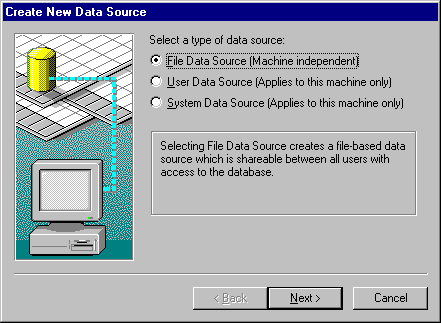
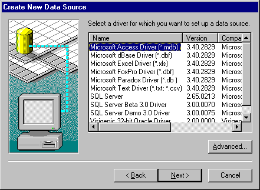
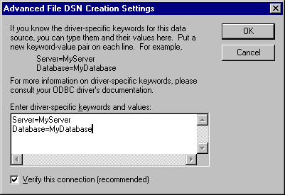
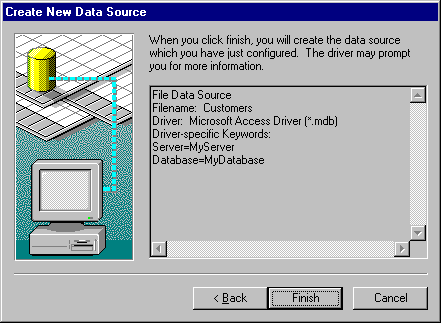

Conformance
Version Introduced: ODBC 2.0
Summary
SQLCreateDataSource displays a dialog box with which the user can add a data source.
Syntax
BOOL SQLCreateDataSource(
HWND hwnd,
LPSTR lpszDS);
Arguments
hwnd
[Input]
Parent window handle.
lpszDS
[Input]
Data source name. lpszDS can be a null pointer or an empty string.
Returns
SQLCreateDataSource returns TRUE if the data source is created. Otherwise, it returns FALSE.
Diagnostics
When SQLCreateDataSource returns FALSE, an associated *pfErrorCode value may be obtained by calling SQLInstallerError. The following table lists the *pfErrorCode values that can be returned by SQLInstallerError and explains each one in the context of this function.
| *pfErrorCode | Error | Description |
| ODBC_ERROR_ GENERAL_ERR |
General installer error | An error occurred for which there was no specific installer error. |
| ODBC_ERROR_ INVALID_HWND |
Invalid window handle | The hwnd argument was invalid or NULL. |
| ODBC_ERROR_ INVALID_DSN |
Invalid DSN | The lpszDS argument contained a string that was invalid for a DSN. |
| ODBC_ERROR_ REQUEST_ FAILED |
Request failed | The call to ConfigDSN with the ODBC_ADD_DSN option failed. |
| ODBC_ERROR_ LOAD_LIBRARY_ FAILED |
Could not load the driver or translator setup library | The driver setup library could not be loaded. |
| ODBC_ERROR_ USER_CANCELED |
User canceled operation | User canceled creation of a new data source. |
| ODBC_ERROR_ CREATE_DSN_ FAILED |
Could not create the requested DSN |
Could not connect to the database; the call to SQLDriverConnect for a File DSN did not return a
successful connection.
Could not write to the file. |
| ODBC_ERROR_ OUT_OF_MEM |
Out of memory | The installer could not perform the function because of a lack of memory. |
Comments
If hwnd is null, SQLCreateDataSource returns FALSE. Otherwise, it displays the Create New Data Source dialog box with a wizard page for choosing the type of data source to be set up:

The default option is File Data Source. When a data source has been chosen, a wizard page containing a list of installed drivers is displayed:

If Cancel is clicked, then the dialog box disappears and SQLCreateDataSource returns FALSE with the error code of ODBC_ERROR_USER_CANCELED. If either the User Data Source or System Data Source option was selected, then the Advanced button is unavailable.
When the Next button is clicked, then one of the following will occur, depending on which type of data source was selected:
If Advanced is clicked from the driver list wizard page, a wizard page is displayed for the user to enter driver-specific information. In the text box of this dialog box, type the driver and keywords separated by returns, as follows:

Additional driver-specific keywords can be found under the description of SQLDriverConnect. All but DSN are allowed.
The default for the Verify This Connection option is TRUE. This default applies regardless of whether this wizard page is activated. If OK is clicked, then the string specified in the text box and the Verify This Connection option value are cached. (If the X button or Cancel is clicked, then newly entered driver-specific information is lost, because the string specified in the text box and the Verify This Connection option value are not cached.)
If File Data Source was selected in the first wizard page, then after a driver has been selected and the keyword values have been entered in the Advanced wizard page, the user is prompted to enter a file name. Click Browse to search for a file name, in which case the default directory in the Browse box is specified by a combination of the path specified by CommonFileDir in HKEY_LOCAL_MACHINE\SOFTWARE\Microsoft\Windows\CurrentVersion and “ODBC\DataSources”. (If CommonFileDir was “C:\Program Files\Common Files”, the default directory would be “C:\Program Files\Common Files\ODBC\Data Sources”.)
When a file name has been entered and Next is clicked, then the file name entered is checked for validity against the standard file-naming rules of the operating system. If the file name is invalid, then an error message box notifies the user that an invalid file name was entered. After the user acknowledges the message box, the focus is returned to the wizard page in which the file name is entered. If the file name is valid, then a wizard page showing the selected keyword-value pairs is displayed for review.

If Finish is clicked, and File Data Source was selected as the data source type, and the Verify this connection option is TRUE, then SQLDriverConnect is called with the SAVEFILE and DRIVER keywords. The DriverCompletion argument is set to SQL_DRIVER_COMPLETE. The file name for the SAVEFILE keyword is the name that was entered or chosen, and, and the driver name for the DRIVER keyword is the name that was chosen. If a driver-specific connection string was specified in the Advanced wizard page, then that string is appended after the DRIVER keyword.
If SQLDriverConnect returns SQL_SUCCESS, then the Driver Manager has created the File DSN. SQLCreateDataSource returns TRUE. If SQLDriverConnect does not return SQL_SUCCESS, then a warning message box indicates that a connection could not be made to the data source. A DSN with minimal connection information can still be created. This message box allows the user to either cancel or continue with the File DSN creation.
If the user chooses to continue creating the DSN, then this process continues as if the Verify this connection option were set to FALSE. If the user chooses to cancel, then FALSE is returned for SQLCreateDataSource with an error code of ODBC_ERROR_CREATE_DSN_FAILED.
If File Data Source was selected as the data source type, and the Verify this connection option is FALSE, then a File DSN is created with the DRIVER keyword and user-specified connect string (if any) from the Advanced wizard page. If the file creation was successful, TRUE is returned for SQLCreateDataSource. If the file creation was not successful, then an error message box notifies the user with whatever error was returned from the operating system. FALSE is returned for SQLCreateDataSource with an error code of ODBC_ERROR_CREATE_DSN_FAILED. For more information on file data sources, see “Connecting Using File Data Sources” in Chapter 6, “Connecting to a Data Source or Driver,” or see SQLDriverConnect.
If User or System Data Source was selected as the data source type, then ConfigDSN in the driver setup library is called with the ODBC_ADD_DSN fRequest. For more information, see ConfigDSN in Chapter 22, “Setup DLL Function Reference.”
Related Functions
| For information about | See |
| Managing data sources | SQLManageDataSources |